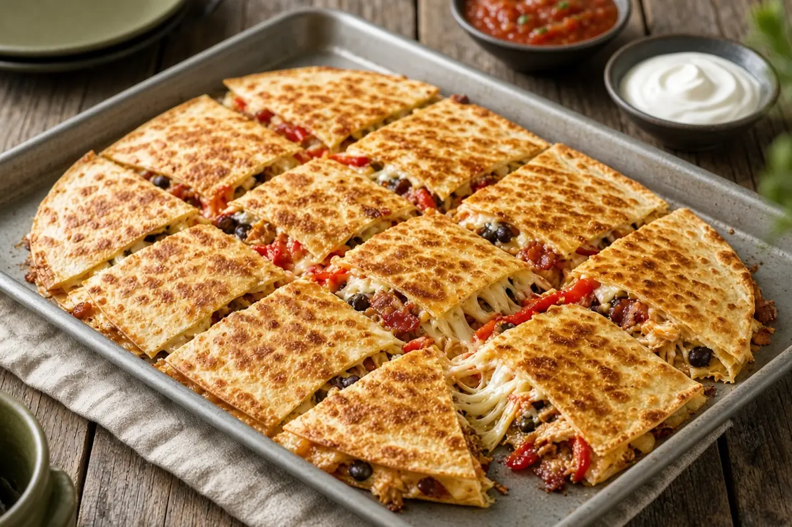

Chicken Sheet Pan Quesadillas
One giant quesadilla baked on a sheet pan: bacon, peppers, chicken, beans, and sour cream under a blanket of cheese and buttery tortillas, cut into squares for a crowd.

Adapted from gimmesomeoven.com
12 servings
By
Yield: 12 servings
Prep:
Cook:
Total:
Difficulty: Easy
Ingredients
- 6 slices bacon, optional
- 4 scallions, thinly sliced, white and green parts separated
- 1 large red bell pepper, cored and diced
- 1 large jalapeño pepper, cored and diced
- 6 cloves garlic, pressed or minced
- 2 tsp chili powder
- 1 tsp ground cumin
- Fine sea salt and freshly cracked black pepper
- 1 lb (about 4 cups) cooked shredded or diced chicken
- 2 (15-oz) cans pinto or black beans, rinsed and drained
- 1 cup (8 oz) sour cream
- 1/4 cup finely chopped fresh cilantro
- Melted butter, for brushing
- 16 (10-inch) or 24 (8-inch) flour tortillas
- 3 to 4 cups shredded Mexican blend or pepper jack cheese
- Guacamole, pico de gallo, salsa, or sour cream, for serving
Instructions
- Cook the bacon in a large sauté pan over medium-low heat until crisp, about 10 minutes. Move it to a paper towel, crumble it, and leave about 1 Tbsp of the drippings in the pan.
- Turn the heat to medium-high and add the white scallion parts, bell pepper, and jalapeño. Cook 5 minutes, until softened.
- Add the garlic, chili powder, cumin, and a good pinch of salt and pepper and cook 2 minutes, stirring often.
- Scrape the vegetables into a large bowl and add the bacon, chicken, beans, sour cream, cilantro, and green scallion parts. Toss to combine and taste for salt.
- Heat the oven to 425°F. Brush a 13 x 18-inch sheet pan with melted butter.
- Overlap tortillas around the edge of the pan so half of each hangs over the rim, and lay two in the center to cover the bottom. Spread the chicken filling evenly over them, then the cheese. Lay two more tortillas in the center and fold the overhanging ones in to cover everything. Brush the top with melted butter.
- Set a second sheet pan on top to weigh it down and bake 20 minutes.
- Remove the top pan and bake 5 minutes more, until the tortillas are golden.
- Cut into squares and serve warm with your toppings.
Notes: Rotisserie chicken is the easy shortcut. Leftover squares reheat well in a hot skillet.